리눅스마스터-2급 (2008-03-16 기출문제)
1과목: 리눅스 운영 및 관리
1. 다음에서 설명하는 디렉토리로 알맞은 것은?
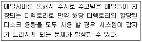
- /tmp
- /usr
- /boot
- /var
(정답률: 54%)

2. 디렉토리 /tmp는 rwxrwxrwt 권한으로 설정되어 있어 시스템의 사용자들이 자유롭게 파일 등을 생성, 삭제 할 수 있다. 다음 chmod 명령 중 /tmp와 동일한 권한을 설정할 수 있는 것은?
- chmod 1775 /test
- chmod 4777 /test
- chmod 2777 /test
- chmod 1777 /test
(정답률: 53%)
3. /etc/passwd는 모든 사용자들이 읽을 수 있으나 직접 수정은 root만 가능하다. 아래와 같이 /etc/passwd의 7번째 값인 /bin/bash를 일반사용자가 /bin/tcsh로 자신의 쉘을 변경하려고 한다면 어떤 명령을 수행해야 하는가?
- tcsh
- chsh
- bash
- bosh
(정답률: 76%)
4. ihd.txt 파일을 새로 생성하였을 때 파일의 허가권을 rw-r----- 와 같이 하려고 할 경우 umask 값은?
- 022
- 020
- 026
- 024
(정답률: 69%)
5. 다음과 같이 사용자 root, 그룹 root 소유인 디렉토리 ihd를 포함한 하위의 파일과 디렉토리의 소유그룹을 ihdgrp로 변경하려고 한다. 알맞는 것은?
- chgrp -g ihdgrp ihd
- chown -g ihdgrp ihd
- chgrp -R ihdgrp ihd
- chown -R ihdgrp ihd
(정답률: 63%)
6. 다음 중 리눅스 디렉토리의 일반적인 설명으로 틀린 것은?
- /boot : 부트 이미지 저장 디렉토리
- /lib : 라이브러리 저장 디렉토리
- /etc : 각종 시스템 설정 파일 저장 디렉토리
- /users : 사용자 홈 저장 디렉토리
(정답률: 75%)
7. 시스템 운영 중 저장 공간이 부족하여 디스크를 추가하려고 한다. 디스크 추가 시 사용해야 하는 명령어가 순서에 맞게 나열된 것은?
- fdisk - mkfs - mount
- mount - fdisk - mkfs
- mkfs - mount - fdisk
- fdisk - mount - mkfs
(정답률: 66%)
8. 다음에서 설명하는 명령어로 알맞은 것은?
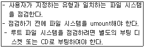
- scdk
- fsck
- ckfs
- chkdisk
(정답률: 76%)
9. 다음은 어떤 명령의 수행 결과인가?
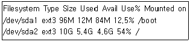
- df -Gt
- df -Ht
- df -Tg
- df -Th
(정답률: 56%)
10. 현재 디렉토리를 포함하여 하위에 있는 디렉토리의 파일 용량까지 한번에 보여주는 명령어는 무엇 인가?
- df
- dc
- du
- dd
(정답률: 68%)
11. 다음 보기 중 올바르게 짝지어진 것은?
- foreground - 화면에 보여주지 않으면서 실행 되는 상태
- background - 화면에 보여주면서 실행되는 상태
- suspend - 메모리에 올라가 있지만 정지된 상태
- daemon - 화면에 보여주면서 실행되는 상태
(정답률: 76%)
12. 아래와 같이 vi 편집기로 문서 작업 중 아래와 같이 작업이 suspend 되어 있다. 다시 작업을 계속하려면 어떤 명령을 내려야 하는가?
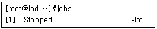
- ag
- bg
- fg
- ng
(정답률: 63%)
13. 서버를 운영하는 방식 중의 하나로 자신은 메모리에 상주하여 대기를 하고 있다가 서비스 요청을 받으면 해당 서비스 프로그램을 구동시켜 서비스를 제공하는 daemon으로 인터넷 슈퍼 데몬이라고 불리는 이것은 무엇인가?
- standalone
- super daemon
- httpd
- xinetd
(정답률: 41%)
14. 다음 프로세스에 보내는 신호(signal)와 번호의 의미가 연결된 것중 틀린 것은?
- 2 : INT(Interval, 실행간격 조정)
- 3 : QUIT(Quit, 실행 종료)
- 9 : KILL(Kill, 무조건 종료)
- 15 : TERM(Terminate, 가능한한 정상 종료)
(정답률: 51%)
15. Foreground로 동작 중인 프로세스를 suspend 하려고 한다. 다음 보기 중 알맞은 것은?
- Ctrl + Z
- Ctrl + C
- Ctrl + X
- Ctrl + D
(정답률: 61%)
16. 서버 사용률이 적은 매주 일요일 새벽 4시 정각에 백업 스크립트인 /usr/local/bin/backup.sh를 이용 하여 데이터를 백업을 하려고 한다. 다음 crontab의 설정 중 알맞은 것은?
- * 0 * 4 00 /usr/local/bin/backup.sh
- 0 * 4 00 * /usr/local/bin/backup.sh
- 00 4 * * 0 /usr/local/bin/backup.sh
- 4 00 * 0 * /usr/local/bin/backup.sh
(정답률: 72%)
17. 시스템의 프로세스 수가 얼마이고 몇 개의 프로세스가 실행 중인지, CPU 상태는 어떤지 등에 대한 실시간 정보를 제공해주는 top 명령에서 CPU 사용률에 따라서 정렬할 때 사용하는 명령어는?
- C
- P
- U
- M
(정답률: 41%)
18. 현재 동작 중인 프로세스들의 상태 중 PPID를 확인하려고 한다. 알맞은 것은?
- ps -e
- ps -p
- ps -f
- ps -a
(정답률: 28%)
19. 프로세스관련 명령어 중 프로세스의 상태를 모니터링하는 명령어가 아닌 것은?
- kill
- ps
- pstree
- top
(정답률: 70%)
20. 웹서버(httpd)를 standalone으로 구동하면 다음과 같이 동시에 여러 개의 자식 프로세스가 동작하여 서비스 요청을 처리한다. 다음 중 웹서버(httpd)를 한번에 종료하는 명령으로 틀린 것은?
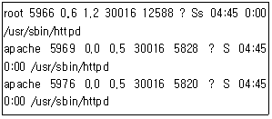
- service httpd stop
- killall httpd
- kill -9 5966 5969 5976
- kill -9 httpd
(정답률: 46%)
21. 다음 중 쉘(shell)에 대한 설명으로 틀린 것은?
- 사용자가 내린 명령을 해석하고 실행시키는 역할을 한다.
- 하나의 명령만을 처리하므로 여러 명령을 스크립트로 작성하는 것은 불가능하다.
- 명령 스크립트를 작성하여 배치(batch)프로그램으로 이용할 수 있다.
- 사용 중 다른 쉘로 변경하는 것이 가능하다.
(정답률: 76%)
22. 다음 중 쉘과 명령어 해석기 동작 특성이 같은 것은?
- php
- C언어
- Cobol
- 파스칼
(정답률: 34%)
23. 다음 중 쉘의 종류가 아닌 것은?
- csh
- bash
- dash
- ksh
(정답률: 76%)
24. 쉘은 사용 중 다른 쉘로 변경할 수 있다. 다음 중 쉘 변경 명령어로 틀린 것은?
- exec csh
- chsh -s /bin/csh
- csh
- echo $SHELL
(정답률: 57%)
25. 다음 중 디렉토리 관련 정보를 담고 있는 환경 변수가 아닌 것은?
- USER
- HOME
- PATH
- PWD
(정답률: 47%)
26. 다음 중 bash의 환경 설정 파일이 아닌 것은?
- .login
- .bash_logout
- .bashrc
- .bash_profile
(정답률: 61%)
27. 다음 쉘 명령에서 내용이 화면에 출력되는 것은?
- cat /etc/inittab > list
- cat < /etc/inittab
- cat /etc/inittab >> list
- cat /etc/inittab > lpr
(정답률: 45%)
28. 다음 중 bash에서 주석문의 시작을 나타내는 기호로 알맞은 것은?
- /*
- #
- REM
- //
(정답률: 59%)
29. 다음 중 화면(screen)에디터가 아닌 것은?
- vi
- pico
- ed
- emacs
(정답률: 70%)
30. 다음 중 vi에서 기본적으로 지원되는 모드로 틀린 것은?
- Ex모드
- 명령모드
- 입력모드
- 출력모드
(정답률: 63%)
31. 다음 명령어 중 편집 중인 파일을 저장하지 않고 종료하는 명령으로 알맞은 것은?
- :q!
- :w
- :wq
- :set nu
(정답률: 84%)
32. 다음 vi 명령모드에서 커서 이동명령 중 틀린 것은?
- i
- l
- h
- k
(정답률: 61%)
33. vi에서 편집 작업 중 유닉스 명령을 실행시키는 방법으로 알맞은 것은?
- : <유닉스 명령>
- ; <유닉스 명령>
- ! <유닉스 명령>
- | <유닉스 명령>
(정답률: 33%)
34. 다음 중 비모드형 편집기로 텍스트 편집 기능은 물론 컴파일, 강력한 도움말 등을 지원할 수 있는 편집기는?
- vi
- pico
- ed
- emacs
(정답률: 49%)
35. 다음 중 RPM에서 제공하는 기능이 아닌 것은?
- 자동 설치
- 업그레이드
- 시스템 성능 측정
- 시스템 검증
(정답률: 60%)
36. 다음 RPM에 대한 설명 중 틀린 것은?
- 리눅스를 부팅한 상태에서 시스템 구성요소를 선택하여 rpm으로 추가 및 기존 파일의 업그레이드가 가능하다.
- rpm으로 제작된 파일들은 컴파일을 할 필요 없이 자동적으로 설치할 수 있다.
- rpm으로 패키지를 설치할 때 의존성(dependency)을 무시하고 설치하는 방법은 없다.
- rpm을 이용하면 처음 설치한 패키지 상태와 파일 크기가 다른가를 체크 할 수 있다.
(정답률: 72%)
37. 다음 rpm 패키지 이름에서 설치 가능한 시스템의 아키텍처를 나타내는 것은?
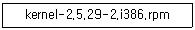
- kernel
- 2.5.29-2
- i386
- rpm
(정답률: 68%)
38. 다음 RPM 명령 중 설치된 패키지를 제거하는 명령은?
- rpm -e 패키지이름
- rpm -i 패키지이름
- rpm -q 패키지이름
- rpm -V 패키지이름
(정답률: 74%)
39. 시스템에 설치되어 있는 모든 패키지의 정보를 알고자 할 때의 질의명령으로 알맞은 것은?
- rpm -qi
- rpm -qa
- rpm -qc
- rpm -qs
(정답률: 63%)
40. 다음 중 파일 압축과 관련 없는 것은?
- compress
- gzip
- bzip2
- dump
(정답률: 80%)
41. 리눅스 커널 설치 시 make 명령을 이용할 때 설치 과정에 꼭 필요한 것은?
- rpm
- tar
- README
- Makefile
(정답률: 61%)
42. dir1.tgz의 압축파일을 푸는 방법으로 틀린 것은?
- gzip dir1.tgz
- gzip -d dir1.tgz
- gunzip dir1.tgz | tar xvf -
- tar xvzf dir1.tgz
(정답률: 46%)
43. 부팅 시 랜카드, 사운드카드 등의 드라이버(모듈)가 자동으로 커널에 적재되도록 설정해주는 설정 파일로 알맞은 것은?
- /etc/modules.cf
- /etc/modprobe.cf
- /etc/modprobe.conf
- /etc/driver.conf
(정답률: 46%)
44. 커널에서 사용하기 위해 부팅 시 메모리에 적재하는 각종 하드웨어의 모듈이 저장되어 있는 디렉토리는?
- /usr/<커널버전>/modules/kernel/drivers
- /usr/modules/<커널버전>/kernel/drivers
- /lib/<커널버전>/modules/kernel/drivers
- /lib/modules/<커널버전>/kernel/drivers
(정답률: 36%)
45. 리눅스에서 일반적으로 프린터를 사용하기 위한 4가지 방식이 아닌 것은?
- Local
- Unix Printer
- Samba Printer
- NovellDirect
(정답률: 67%)
46. 리눅스에서 LPRng를 사용하여 프린터를 설치 하려고 할 때 설정해야하는 파일로 알맞은 것은?
- /etc/printconf
- /etc/printcap
- /etc/print.conf
- /etc/print.cap
(정답률: 53%)
47. 별도의 응용프로그램을 이용하지 않고 5장 분량의 ASCII 텍스트 파일인 ihd.txt를 명령행에서 바로 설정된 프린터 lp0를 통해서 출력하려고 한다. 다음 보기 중 틀린 것은?
- cat ihd.txt | lpr
- lpr > ihd.txt
- cat ihd.txt > /dev/lp0
- pr -l 5 ihd.txt | lpr
(정답률: 35%)
48. 리눅스에서 사용하는 MP3 재생 프로그램으로 알맞은 것은?
- xmms
- winamp
- media player
- pine
(정답률: 46%)
2과목: 리눅스 활용
49. 리눅스 부팅시 X 윈도우로 부팅이 안되고, 콘솔 모드로 부팅이 된다. X 윈도우로 부팅이 되도록 하려고 할 때, 아래의 /etc/inittab 설정 중 맞는 것은?
- id:3:initdefault:
- id:3:runlevel:
- id:5:initdefault:
- id:5:runlevel:
(정답률: 41%)
50. X 윈도우는 스크립트들이 순서에 따라 실행되 면서 구동된다. 다음 중 관련 스크립트의 구동 순서가 맞는 것은?
- xinitrc → .Xresources → .Xmodmap → Xclients
- xinitrc → Xclients → .Xmodmap → .Xresources
- xinitrc → .Xresources → Xclients → .Xmodmap
- xinitrc → Xclients → .Xresources → .Xmodmap
(정답률: 40%)
51. 다음은 리눅스 멀티미디어 관련 프로그램 중 하나에 대한 설명이다. 알맞은 것은 어느 것인가?
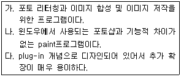
- XMMS
- GIMP
- xv
- Real Player
(정답률: 70%)
52. 다음은 X 윈도우 관련 프로그램 중 하나에 대한 설명이다. 가장 알맞은 것은 어느 것인가?
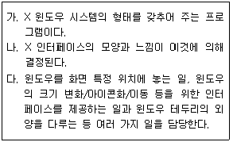
- 데스크톱
- 디스플레이 매니저
- KDE
- 윈도우 매니저
(정답률: 48%)
53. 다음에 나열된 문항 중 프로그램 성격이 나머지 3개와 다른 것은?
- WindowMaker
- twm
- GNOME
- AfterStep
(정답률: 52%)
54. X 윈도우 시스템의 특징 중 맞는 것은?
- 프로그램 작성시 다른 종류의 컴퓨터에서 구동 될 수 있을 정도로 이식성이 뛰어나다.
- 사용자가 원하는 모양의 인터페이스를 바꿀 수 없다.
- 디스플레이 장치에 의존적이다.
- 서로 다른 기종을 함께 사용할 수 없다.
(정답률: 53%)
55. X 윈도우에서 가상 터미널을 사용하기 위해 콘솔로 전환하였다가 다시 X 윈도우로 복귀하고자 한다. 다음 중 맞는 조합키는?
- Ctrl + Alt + F1
- Ctrl + Alt + F2
- Ctrl + Alt + F4
- Ctrl + Alt + F7
(정답률: 40%)
56. 데스크톱 환경 중 하나인 KDE에 대한 설명으로 틀린 것은?
- KDE가 실행되는 시스템은 리눅스뿐만 아니라 HP-UX, Solaris 등도 가능하다.
- 파일 매니저, 윈도우 매니저, 설정 시스템, 각종 애플리케이션의 집합체이다.
- 노르웨이의 Troll Tech사에서 개발되었다.
- GTK 라이브러리 기반으로 개발되었다.
(정답률: 53%)
57. 다음 중 네트워크로 연결된 상태나 활성화된 소켓 등을 확인할 수 있는 명령어는 무엇인가?
- ifconfig
- route
- netstat
- nslookup
(정답률: 51%)
58. 다음 중 시스템에 설정되어 게이트웨이를 확인 할 때 사용할 수 있는 명령어는 무엇인가?
- ifconfig
- host
- netstat
- nslookup
(정답률: 41%)
59. 다음의 내용을 확인할 수 있는 리눅스 시스템에서의 설정 파일은?
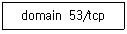
- /etc/services
- /etc/protocols
- /etc/resolv.conf
- /etc/hosts
(정답률: 38%)
60. 다음 중 인터넷 서비스인 SSH의 포트 번호는?
- 21
- 22
- 23
- 25
(정답률: 61%)
61. LAN의 구조 중 링형 토폴로지(Topology)에 대한 설명으로 틀린 것은?
- 논리적이고 둥글고 단방향인 포인트 투 포인트(Point to Point)형태로 연결한다.
- 고성능 네트워크에 적합하다.
- CDMA/CD방식이 대표적이며 또한 토큰 패싱(Token Passing)방식에 사용한다.
- 분산 제어와 검사, 회복이 가능하다.
(정답률: 33%)
62. 다음에 설명하는 통신장비는 어느 것인가?
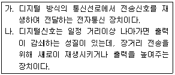
- 라우터(Router)
- 브리지(Bridge)
- 게이트웨이(Gateway)
- 리피터(Repeater)
(정답률: 69%)
63. OSI 7계층 중 네트워크의 대화제어자(Dialog Contoller)로서 통신 장치들 간의 상호작용을 설정하고 유지하며 동기화 역할을 수행하고, 사용자의 연결이 유효한지를 확인하고 설정하는 계층은?
- 데이터링크계층(Data Link Layer)
- 세션계층(Session Layer)
- 표현계층(Presentation Layer)
- 전송계층(Transport Layer)
(정답률: 47%)
64. 다음 중 TCP 및 UDP 프로토콜에 대한 설명 중 틀린 것은?
- UDP는 불안정한 비접속 데이터그램 프로토콜 이다.
- TCP는 접속기반(Connection-oriented) 프로토콜이다.
- TCP는 바이트 스트림(byte-stream)프로토콜 이다.
- UDP는 올바른 순서로 전달되었는지 확인하기 때문에 TCP에 비해 안정적이다.
(정답률: 67%)
65. 다음 중 하나의 클래스 C 네트워크의 호스트 개수를 64개로 구성할 경우 서브넷마스크는 어떻게 설정해야 하는가?
- 255.255.255.0
- 255.255.255.64
- 255.255.255.128
- 255.255.255.192
(정답률: 47%)
66. 도메인 네임 체계에서 'or'이라는 서브도메인이 포함되어 있으면 어떠한 기관을 나타내는 것인가?
- 정부기관
- 비영리기관
- 학교
- 회사
(정답률: 58%)
67. 인터넷 서비스 중 네트워크상의 다양한 호스트들이 파일을 공유할 수 있도록 해주는 프로토콜은?
- telnet
- HTTP
- SMTP
- NFS
(정답률: 61%)
68. FTP를 이용하여 파일을 송수신할 때 전송상태를 확인하고자 한다. 다음 중 가장 알맞은 명령어는?
- as
- hash
- list
- bi
(정답률: 52%)
69. 다음 중 유즈넷 뉴스그룹(USENET NEWS GROUP)에 대한 설명 중 맞는 것은?
- 공통의 주제별로 모여 정보를 나누고 토론하는 자유게시판 서비스이다.
- 인터넷상에서 채팅을 즐길 수 있게 해주는 서비스이다.
- 관련 프로그램으로는 BitchX, ircII, EPIC 등이 있다.
- 인터넷 회선을 이용하여 음성을 전달하는 서비스 이다.
(정답률: 58%)
70. 다음 중 SSH(Secure Shell)에 대한 설명 중 틀린 것은?
- 원격지 서버의 내용을 로컬시스템에 복사할 수 있다.
- rsh처럼 원격으로 쉘명령을 사용할 수 있다.
- 보안이 강화되어 rlogin처럼 반드시 계정 및 패스워드를 입력해야만 로그인할 수 있다.
- telnet과 같이 원격지 서버에 접속할 때 사용 한다.
(정답률: 36%)
71. ifconfig 명령으로 확인할 수 없는 것은?
- 네트워크 인터페이스의 브로드캐스트
- 네트워크 인터페이스의 제조사
- 네트워크 인터페이스의 맥어드레스(MAC address)
- 네트워크 인터페이스의 넷마스크(Netmask)
(정답률: 69%)
72. OSI 참조모델과 프로토콜을 주관하는 기관은?
- ISO(International Standards Organization)
- IEEE(Institute of Electrical and Electronics Engineers)
- ANSI(American National Standards Institute)
- EIA(Education Industries Association)
(정답률: 64%)
73. 아파치 1.3 버전과 2.0 버전과의 비교 설명 중 틀린 것은?
- 아파치 2.0 버전만 멀티쓰레드(Multi-Thread) 방법을 이용하여 프로세스를 처리한다.
- PHP연동시 아파치 1.3버전은 정적 및 동적 연동이 가능하지만 아파치 2.0은 동적연동만 가능하다.
- 아파치 1.3 버전에서는 포트번호 80과 8080을 동시에 운영하려면 관련설정파일이 2개이어야 한다.
- 아파치 1.3 및 2.0 버전 모두 포트번호 변경시 Port라는 지시자를 사용한다.
(정답률: 20%)
74. 리눅스 인터페이스 중 loopback interface에서 사용하는 IP 주소는?
- 255.255.255.0
- 192.168.0.1
- 127.0.0.1
- 10.0.0.1
(정답률: 71%)
75. 다음 중 모뎀과 전화선을 이용할 경우 가장 관계가 깊은 프로토콜은?
- ICMP
- POP3
- PPP
- DHCP
(정답률: 52%)
76. 다음 중 FTP 클라이언트 프로그램이 아닌 것은?
- ncftp
- lftp
- gftp
- vsftp
(정답률: 35%)
77. 다음 중 블루투스(BLUETOOTH)에 대한 설명으로 알맞은 것은?
- 1GHz대역을 사용하여 휴대폰 및 노트북과의 연결이 쉽다.
- 간섭방지를 위한 주파수 호핑 방식을 사용한다.
- 최대 데이터 전송속도는 10Mbps이며, 양방향 전송을 위해서 시분할 다중전송방식이 사용 된다.
- 전송거리는 100m이고, Option으로 200m까지 가능하다.
(정답률: 32%)
78. 다음은 리눅스를 이용한 기술에 대한 설명이다. 가장 알맞은 것은?
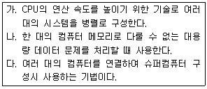
- Beowulf Cluster
- HA(High Available) Cluster
- RAID
- LVM(Logical Volume Manager)
(정답률: 39%)
79. 다음 중 임베디드(Embedded) 시스템에 대한 설명으로 틀린 것은?
- open source, open architecture이다.
- 소규모 모듈 단위로 설계되어 있다.
- 리얼타임(Real time) 운영을 지원한다.
- 여러 하드웨어 구조에 이식될 수 없다.
(정답률: 67%)
80. 최근에는 물리적으로 하나의 시스템에 여러 운영체제를 설치할 수 있는 가상화(Virtualization) 기술이 각광을 받고 있다. 다음 중 리눅스에서 사용하는 가상화 소프트웨어는 무엇인가?
- iptables
- heartbeat
- snort
- Xen
(정답률: 70%)